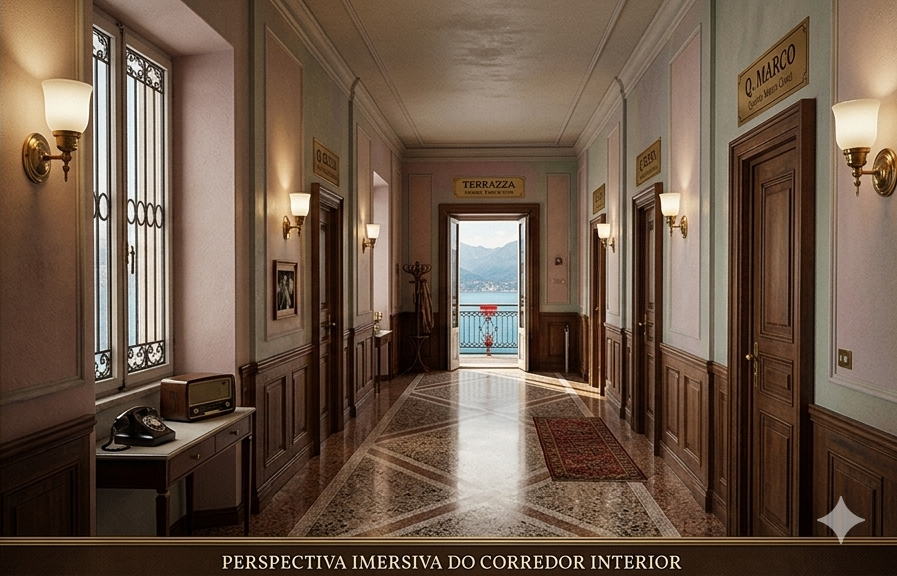

Carabinieri di Como · Sezione Investigativa · Giugno 1953
VILLA MERIDIANA — PLANTA REALISTA
Referência visual dos ambientes · Lago di Como · 14 de Junho de 1953

Lago di Como, Lombardia · Investigação de 14 de Junho de 1953

Referência visual dos ambientes · Lago di Como · 14 de Junho de 1953